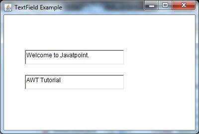
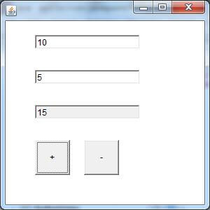

Java AWT TextField
17 Mar 2025 | 4 min read
The object of a TextField class is a text component that allows a user to enter a single line text and edit it. It inherits TextComponent class, which further inherits Component class.
When we enter a key in the text field (like key pressed, key released or key typed), the event is sent to TextField. Then the KeyEvent is passed to the registered KeyListener. It can also be done using ActionEvent; if the ActionEvent is enabled on the text field, then the ActionEvent may be fired by pressing return key. The event is handled by the ActionListener interface.
AWT TextField Class Declaration
public class TextField extends TextComponent
TextField Class Constructors
| Sr. no. | Constructor | Description |
|---|---|---|
| 1. | TextField() | It constructs a new text field component. |
| 2. | TextField(String text) | It constructs a new text field initialized with the given string text to be displayed. |
| 3. | TextField(int columns) | It constructs a new textfield (empty) with given number of columns. |
| 4. | TextField(String text, int columns) | It constructs a new text field with the given text and given number of columns (width). |
TextField Class Methods
| Sr. no. | Method name | Description |
|---|---|---|
| 1. | void addNotify() | It creates the peer of text field. |
| 2. | boolean echoCharIsSet() | It tells whether text field has character set for echoing or not. |
| 3. | void addActionListener(ActionListener l) | It adds the specified action listener to receive action events from the text field. |
| 4. | ActionListener[] getActionListeners() | It returns array of all action listeners registered on text field. |
| 5. | AccessibleContext getAccessibleContext() | It fetches the accessible context related to the text field. |
| 6. | int getColumns() | It fetches the number of columns in text field. |
| 7. | char getEchoChar() | It fetches the character that is used for echoing. |
| 8. | Dimension getPreferredSize() | It returns the preferred size of the text field. |
| 9. | boolean isEditable() | It checks if the text field is editable or not. |
| 10. | void setColumns(int columns) | It sets the number of columns in the text field. |
| 11. | void setEditable(boolean b) | It enables or disables the editing of the text field. |
| 12. | void setEchoChar(char c) | It sets an echo character used for password fields. |
| 13. | void setText(String t) | It sets the text to be displayed in the text field. |
Examples
TextFieldExample.java
import java.awt.*;
public class TextFieldExample {
public static void main(String args[]) {
Frame f = new Frame("TextField Example");
TextField t1 = new TextField("Welcome to Java.");
TextField t2 = new TextField("AWT Tutorial", 10);
t1.setBounds(50, 100, 200, 30);
t2.setBounds(50, 150, 200, 30);
f.add(t1);
f.add(t2);
f.setSize(400, 400);
f.setLayout(null);
f.setVisible(true);
}
}
Output:
TextFieldExample2.java
In this example, we are creating a calculator using TextField and Button components.
import java.awt.*;
import java.awt.event.*;
public class TextFieldExample2 extends Frame implements ActionListener {
TextField tf1, tf2, tf3;
Button b1, b2;
TextFieldExample2() {
tf1 = new TextField();
tf1.setBounds(50, 50, 150, 20);
tf2 = new TextField();
tf2.setBounds(50, 100, 150, 20);
tf3 = new TextField();
tf3.setBounds(50, 150, 150, 20);
tf3.setEditable(false);
b1 = new Button("+");
b1.setBounds(50, 200, 50, 50);
b2 = new Button("-");
b2.setBounds(120, 200, 50, 50);
b1.addActionListener(this);
b2.addActionListener(this);
add(tf1);
add(tf2);
add(tf3);
add(b1);
add(b2);
setSize(300, 300);
setLayout(null);
setVisible(true);
}
public void actionPerformed(ActionEvent e) {
String s1 = tf1.getText();
String s2 = tf2.getText();
int a = Integer.parseInt(s1);
int b = Integer.parseInt(s2);
int c = 0;
if (e.getSource() == b1) {
c = a + b;
} else if (e.getSource() == b2) {
c = a - b;
}
String result = String.valueOf(c);
tf3.setText(result);
}
public static void main(String[] args) {
new TextFieldExample2();
}
}
Output:
